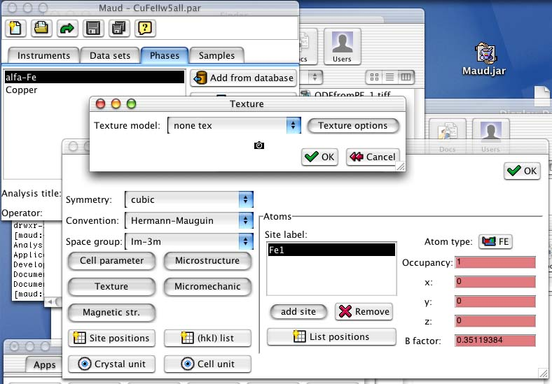
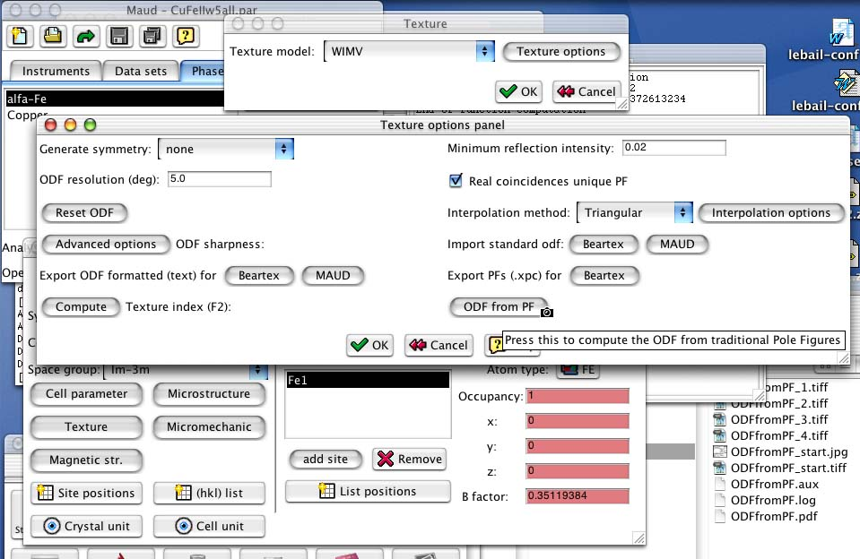

MAUD tutorial - Computing ODF from traditional Pole Figures using WIMV
Note: This tutorial is available also in PDF format: ODFfromPF.pdf, but you will need also the archive containing the example files: ODFfromPF.zip
Introduction and purpose
In this tutorial we will see how Maud can be used to compute an ODF from some traditional Pole Figures using the WIMV method. After that we will use the graphical routines of Maud to display the reconstructed Pole Figures from the computed ODF. In addition the so obtained ODF can be used to correct the spectra for a subsequent Rietveld refinement. To this scope we will use an already prepared analysis file concerning a Cu-Fe codeformed sample. Some spectra were collected at the TOF source of IPNS with the GPPD instrument and are already specified in the analysis file. To concentrate the tutorial on the original goals the spectra were already refined for some characteristics and only the texture has not been refined. In addition we have some Pole Figures from this sample. (In reality the Pole Figures were not measured traditionally but extracted using Maud from the spectra supposing an orthorhombic texture. See the tutorial on texture analysis about how to do that). For just the texture analysis by using traditional pole figures we don't need all the spectra and instrument defined in the analysis file. The only necessary thing is a phase defined at least with the correct space group (Laue group in reality) and lattice parameters. WIMV use only them for the ODF computation. In this tutorial we have also the spectra to show how the so obtained ODF can be used to correct the spectra for the texture. In principle you can collect just a spectrum for a Rietveld analysis and some pole figures to compute the texture and use it to perform a Rietveld analysis having the exact correction for the intensities from the texture (ODF) computed from the pole figures.
Requisite
To execute this tutorial you need Maud version 1.68 or later installed on your computer. Download the archive file ODFfromPF.zip Unzip the archive to extract the example files to be loaded by Maud. Start the program Maud. You are ready to start the tutorial.
Procedure
From Maud use the menu command File:Open... to locate and load the file CuFeIIw5all.par from the tutorial files. Select the Phases tabPanel in the main window of Maud, so you will have something like in figure 1.
Figure 1: Starting main window and Phases tabPanel.
If you select one of the phases in the list and press the edit button the phase frame will appear and pressing the texture button you may check that no texture model is actually active for the phase (see figure 2).

Figure 2: Verifying that no texture model is active.
Close the frames and go back to the main window. We will now try to compute the spectra with no texture model activated. The spectra will be simulated as if the phases have a random ODF. To compute the spectra with the actual parameters, select Refinement:Compute spectrum from the main menu as in figure 3.
Figure 3: Computing spectra with the random model.
A window will appear showing the result of the computation (the Weighted Sum of Squares, WSS). As the computation is finished we can display the corresponding plots. Select the Data sets tabPanel and select the only dataset in the list. Choose from the main menu (the menu of the main window) Graphic:Plot selected dataset and a window will appear showing all the spectra with the fitting functions in a multiplot fashion as in figure 4.
Figure 4: Multiplot with the random model.
From the plot it is recognizable that the texture deviations on the intensity are not reproduced. Drawing a box in the plot around the portion you want to enlarge you can zoom in. So enlarging the lower-right part of the plot, the texture deviations are more visibles as in figure 5. You can close now the plot window.
Figure 5: Zoom in the multiplot with the random model.
The first part has been used only to show how it looks a fitting on a textured pattern when we don't use a texture model or not the proper one. It is not necessary to perform this first part before to perform the texture computation as in the following. Now we will perform the ODF computation using the WIMV method and some pole figures as in traditional texture methods.
In the Phases tabPanel select one of the two phases (for example we can start with the alfa-Fe) and press the edit button to view the phase frame for the alfa-Fe. For texture computation we need only to specify the symmetry/space group (the Im-3m is already specified for the Fe) and the cell parameters (you may verify this by pressing the Cell parameter button. The rest is needed only for the Rietveld computation but not for the texture calculation that we will perform in the following. Press the texture button to see the window for the selection of the texture model. Select from the combo box the WIMV model and press the options button to see the options window for this model. You will end up with the frame as in figure 6.

Figure 6: The WIMV options frame.
Press the ODF from PF button and a dialog box will appear asking to locate the pole figure file needed for the ODF computation. The file should be a text file containing all the experimental pole figures for the alfa-Fe in the Beartex format (use a text editor to see the format used in this example; superposed pole figures can be specified as for the 0,3,6 that is superposed with 3,0,6 inside the example; see the alfa-Few5.xpe file at the 0,3,6 pole figure). Locate and load the alfa-Few5.xpe file inside the tutorial folder. It contains pole figures in 5x5 degrees grid (the resolution of the pole figures should correspond to the resolution of the ODF in the WIMV options frame).
In this example the pole figures are not complete pole figures and in the input file used, zero's are reported in the unmeasured region. The measured region is specified with the 0.0 40.0 fields corresponding to 0 to 40 degrees in q (or c) for each pole figure. Warning: in WIMV, in order to correctly works, it is necessary to specify the measured part as lower/upper value for the q as in this example. Otherwise the zero's will be interpreted as real zero's in the pole figure. Each pole figure may have a different range in q. The angle f should go instead from 0 to 360 as in this example. No smaller range for f is possible. If you want to use a different resolution the input format for the pole figures is the same (intensities in rows of 18th values; obviously more or less rows are needed) but you should put the correct resolution value after the q and the f range for each pole figure. Remember to use only 5/n or 5*n resolution values for a secure computation with n as an integer.
Superposed pole figures are reported as a mean pole figure (over all the suposed ones) with the h k l indices of the first reflex. In the subsequent rows it should be reported:
numberOfSuperpositions h_1 k_1 l_1 weight_1 h_2 k_2 l_2 weight_2 ........
Warning: don't put a line break inside a h_n k_n l_n weight_n of a reflex. Put line breaks if necessary between peak specifications.
As soon as you load the pole figures file, if all is ok, a WIMV computation will start and the progressive output will be visible in the console window.
Note: the console window is the window where Java messages are shown. For Unix is the console or terminal window where the program started (in MacOS X, if a true Mac OS X app has been used, you can see the output by starting the Console application from Applications:Utilities), for Windows is the DOS window for the Java output (edit the parameters of the window to enable more lines to be remembered) and in Mac OS is a window called console that will appear in the lower-left corner only if there is an output. The WIMV output is visible in figure 7 for the last few cycles. The general Rp and single Rp factors for each pole figure is reported (RPFAKs) with also the normalization factor (NORMFAKs).
Figure 7: WIMV output at end.
You can press the Compute button before the Texture index (F2) to compute the texture index for this ODF.
To view the reconstructed pole figures for the alfa-Fe from this computed ODF you can close the windows and come back to the main window of Maud. From the main menu select Graphic:Texture plots. A frame will appear with alfa-Fe already selected and a list of peaks. To plot more pole figures in 2D turn on the option active in the list of hkl's for each hkl you want to use (for example the 1 1 0, 2 0 0 and 2 2 2) and press the Plot button in the lower-left corner. After the pole figures have been recalculated, a box will appear asking to confirm the proposed range for the pole figure intensities. Press accept to use the proposed range and a window with the reconstructed pole figures and the intensity reference scale will appear as in figure 8.
Figure 8: Reconstructed pole figures plot.
Close the windows and come back to the main Maud window. Do the same texture computation for the second phase (Copper) using the copperw5.xpe pole figures input file.
Note: after the WIMV texture computation the program will save automaticly for each phase on which the texture computation has been performed some extra files containing:
- nameOfThePhase.xpx : the experimental and reconstructed pole figures in Beartex format for comparison plotting. Can be loaded by the Beartex program.
- nameOfThePhase.odf : the odf in Maud format. Can be loaded by Maud or used automatically for Rietveld computation if WIMV is used as texture model.
Finally, now each phase has an ODF associated that has been computed from the pole figures. The experimental pole figures used for input has been obtained with the sample in the same position as for the spectra collection. So the ODF can be used to correct the spectra in a Rietveld computation. (If the reference frame is not the same, you can use the sample position angles in the Sample edit frame to make the two reference frames corresponding). If you select from the main menu Refinement:Compute spectrum the program will compute the spectra using also the ODF's to correct the intensities (note: the WIMV texture model should remain active as texture model for both phases; if you change to none tex than the random texture model will be used). After the computation of the fitting function has been finished (note the lower value of the WSS that indicates a better fitting) you can use as at the beginning the menu choice Plot selected dataset to view the multiplot.